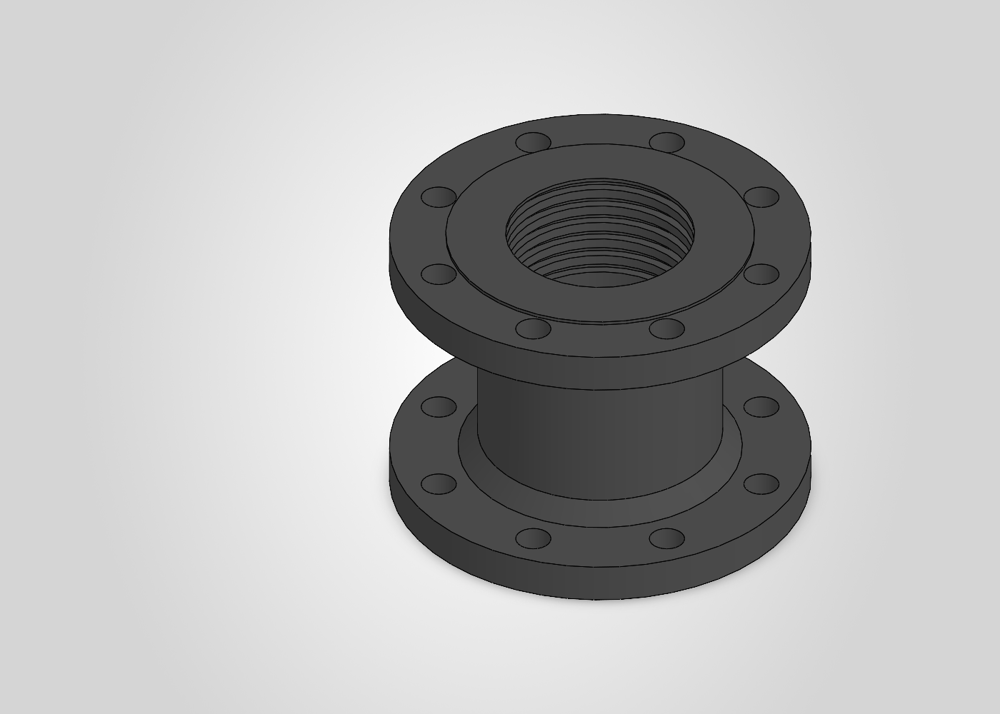

Sketch and feature modelling
Build bosses, cuts, revolves, sweeps, lofts, patterns, sheet-metal features, and more.
Open-source MCP bridge · Early alpha
SolidPilot turns higher-level CAD intent into controlled feature operations while keeping the live SOLIDWORKS model as the source of truth.
Working prototype for Windows and SOLIDWORKS 2026. Expect rough edges and breaking changes.

Ø215 mm 8 × Ø18 holesA verifiable loop
An MCP-capable client talks to the local execution service.
Controlled sketch and feature operations change the real document.
Topology, properties, screenshots, and responses report the current state.
The client checks the result, corrects problems, and can export the model.
Current tool surface
Build bosses, cuts, revolves, sweeps, lofts, patterns, sheet-metal features, and more.
Read model structure and mass properties, then capture views of the actual document.
Create drawing views and export supported CAD, mesh, drawing, and document formats.
Use the developing assembly slice and supported simulation operations where licensed.
The forward compiler workflow is still experimental. Durable references across topology-changing edits and some advanced operations remain active development areas.
Before you install
SolidPilot does not provide SOLIDWORKS. It connects an MCP client to software and licences already available on your Windows workstation.
Support and development
Include the SOLIDWORKS release, SolidPilot commit, tool request, response, and the smallest reproducible model you can safely share. Never post licence keys, credentials, or confidential CAD.